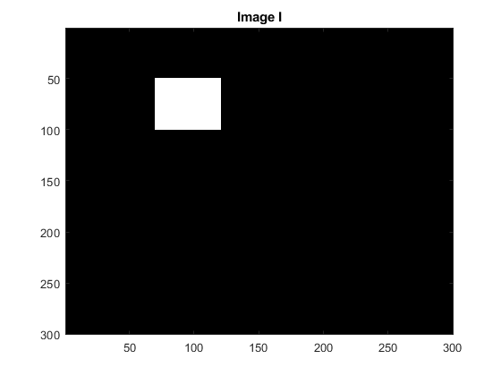
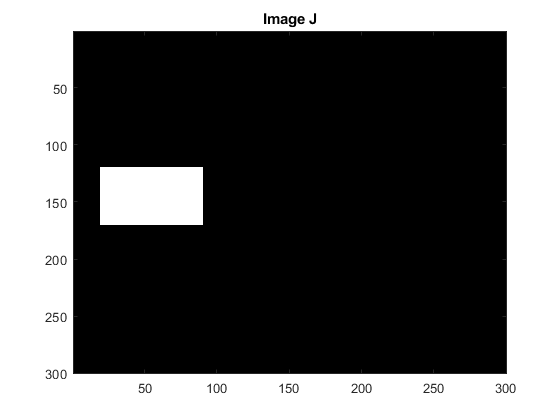
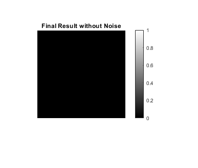
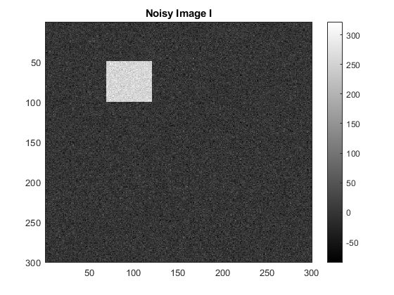
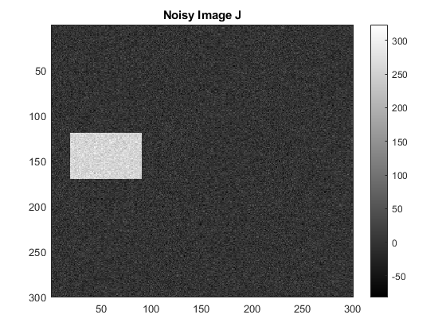
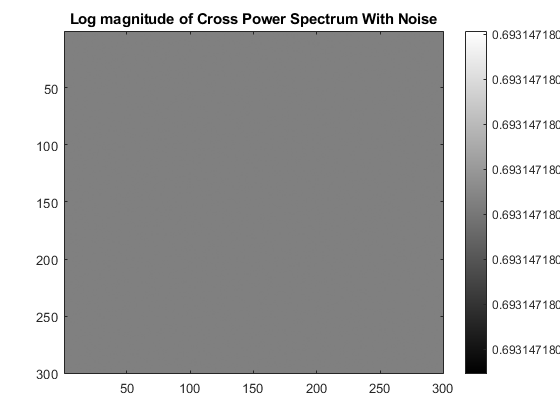

Contents
tic;
Cross Power Spectrum without noise
I = zeros(300,300); I(50:100,70:120) = 255; J = zeros(300,300); J(120:170,20:90) = 255; figure; imagesc(I); title('Image I'); colormap gray; figure; imagesc(J); title('Image J'); colormap gray; crossPowerSpectrum(I,J,0);  
Cross Power Spectrum with noise
Addiing noise here
rng(0); I1 = I + randn(size(I))*20; J1 = J + randn(size(J))*20; figure; imagesc(I1); title('Noisy Image I'); colorbar; colormap gray; figure; imagesc(J1); title('Noisy Image J'); colorbar; colormap gray; crossPowerSpectrum(I1, J1, 1);  
Conclusion
The complexity of the FFT based method is $ O(m*n\log(m*n) $ But for pixel based methods complexity will be $O(m*n)^2 $
% The Paper has given two approaches for correcting rotation between two % images One is Without Scale change and another with scale change. % The equations 5, 6, 8(From the paper) are the corresponding equations. toc;
Elapsed time is 7.081729 seconds.